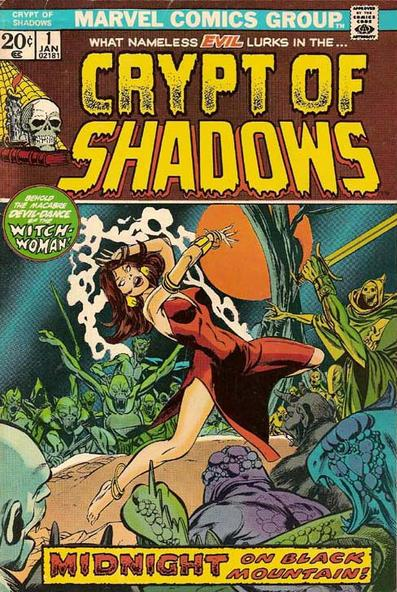

Crypt of Shadows

Cover: Gil Kane
Writer: Stan Lee
Series: On-going, 21 issues
Publisher: 1973 Marvel
All short story horror reprints:
- Midnight on Black Mountain: A woman with a terminal illness meets a man who tricks her into becoming a witch. Illustrated by Mort Lawrence.
- Where Monsters Dwell: A scientist finds a way to exile his enemies to another dimension, but one manages to escape and change places with the scientist. Illustrated by Basil Wolverton
- Don't Look! Illustrated by Jay Scott Pike.
- The Scarecrow. Illustrated by Russ Heath.